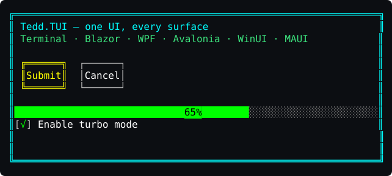
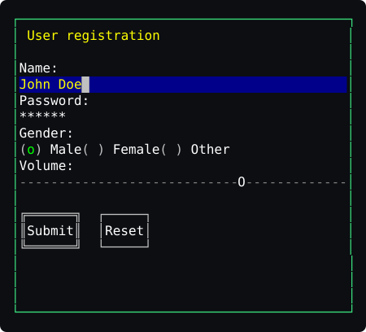
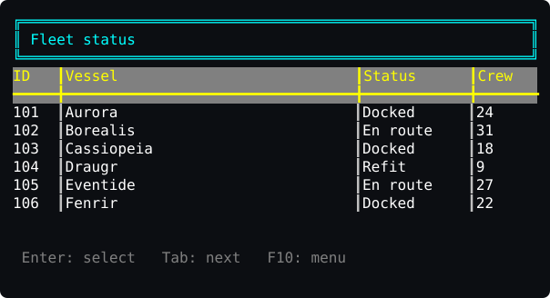
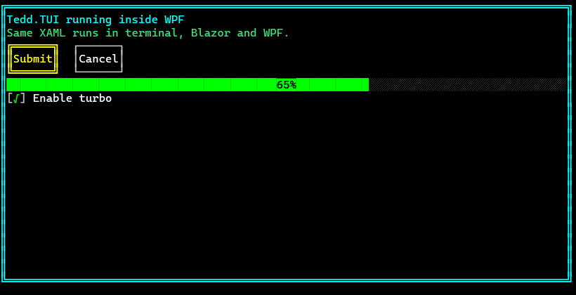
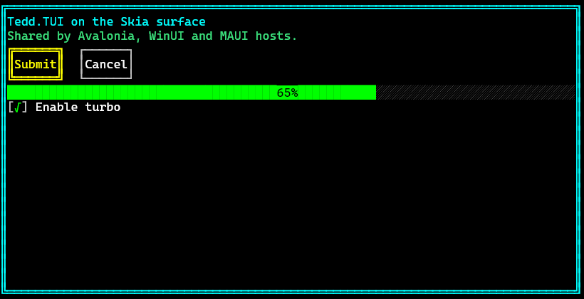

A high-performance, WPF-inspired text user interface framework for .NET 10. Define the UI once — in XAML or in code — and host the identical character-cell grid anywhere.
Terminal · Blazor · WPF · Avalonia · WinUI 3 · .NET MAUI

<!-- app.xaml — runs unchanged on every host -->
<TuiWindow>
<Border BoxStyle="Double" BorderColor="Cyan">
<StackPanel Orientation="Vertical">
<TextBlock Text="Hello Tedd.TUI!" Foreground="Cyan"/>
<TextBox x:Name="NameBox" Width="30"/>
<Button Content="Submit" Click="OnSubmit"/>
</StackPanel>
</Border>
</TuiWindow>// …or build the same tree in C#
var window = new TuiWindow
{
Content = new Border
{
BoxStyle = BoxStyle.Double,
BorderColor = TuiColor.Cyan,
Child = new StackPanel { /* … */ }
}
};
// terminal:
new TuiApp(window).Run();Truecolor VT rendering with double-buffered diffing, mouse support and inline images (Sixel/Kitty/iTerm2). Near-zero CPU while idle.
Tedd.TUI.Platform.Console + WindowsTerminal / LinuxTerminalCanvas or DOM surface in any browser. Author in Razor components or drop in <TuiXamlView Source="app.xaml"/>.
TuiHostElement paints the real cell grid — including inside the Visual Studio XAML designer, for live-preview TUI editing.
TuiHostControl renders via SkiaSharp on Windows, macOS and Linux with full HiDPI support.
TuiHostControl on an SkiaSharp canvas inside Windows App SDK applications.
TuiHostView brings the grid to Android, iOS, Mac Catalyst and Windows; touch maps to TUI mouse events.




dotnet add package Tedd.TUI # core: controls, layout, XAML
dotnet add package Tedd.TUI.Platform.Console # terminal host
dotnet add package Tedd.TUI.Platform.Blazor # browser host
dotnet add package Tedd.TUI.Platform.Wpf # WPF host + designer preview
dotnet add package Tedd.TUI.Platform.Avalonia # Avalonia host
dotnet add package Tedd.TUI.Platform.WinUI # WinUI 3 host
dotnet add package Tedd.TUI.Platform.Maui # .NET MAUI host| Feature | Where |
|---|---|
| WPF-style control suite (40+ controls) | Tedd.TUI |
| Grid/StackPanel/DockPanel/WrapPanel layout, data binding, routed events | Tedd.TUI |
| Markdown viewer & syntax-highlighted code view | Tedd.TUI |
| Inline bitmap images in the cell grid | Tedd.TUI.Imaging + capable hosts |
| Shared Skia cell painter | Tedd.TUI.Surface.Skia |